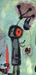
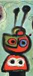
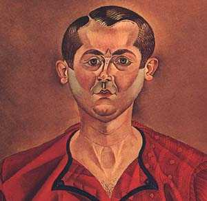
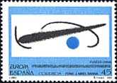
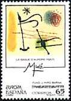
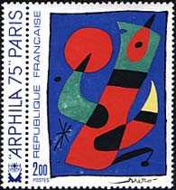
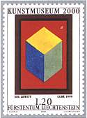
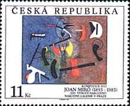
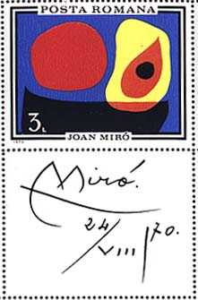
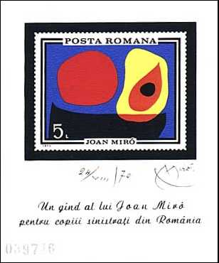

 |
 |
Miró, Joan
(1893-1983), Spanish painter, whose Surrealist works, with their subject-matter drawn from the realm of memory and imaginative fantasy, are some of the most original of the 20th century.Miró was born April 20, 1893, in Barcelona and studied at the Barcelona School of Fine Arts and the Academia Galí. His work before 1920 shows wide-ranging influences, including the bright colors of the Fauves, the broken forms of Cubism, and the powerful, flat two-dimensionality of Catalan folk art and Romanesque church frescoes of his native Spain. He moved to Paris in 1920, where, under the influence of Surrealist poets and writers, he evolved his mature style. Tip: please point on the stamps with the mouse index for supplementary information.
 |
 |
 |
Miró drew on memory, fantasy, and the
irrational to create works of art that are visual analogues of Surrealist
poetry. These dreamlike visions, such as Harlequin's Carnival (1925,
Albright-Knox Gallery, Buffalo) or Dutch Interior (1928, Museum of
Modern Art, New York), often have a whimsical or humorous quality,
containing images of playfully distorted animal forms, twisted organic
shapes, and odd geometric constructions.
The forms of his paintings are organized against flat
neutral backgrounds and are painted in a limited range of bright colours,
especially blue, red, yellow, green, and black. Amorphous amoebic shapes
alternate with sharply drawn lines, spots, and curlicues, all positioned on
the canvas with seeming nonchalance. Miró later produced highly
generalized, ethereal works in which his organic forms and figures are
reduced to abstract spots, lines, and bursts of colours.
 |
 |
 |
Joan Miró painted in a style often called biomorphic abstraction. This unique method features shapes that seem to float across the canvas; sharp bursts of color on a neutral background lead the eye across the picture plane. Miró is generally regarded as one of the leading figures in the Surrealist movement of the early and mid-1900s.
 |
 |
Miró also experimented in a wide array of other media, devoting himself to etchings and lithographs for several years in the 1950s and also working in water color, pastel, collage, and paint on copper and masonite. His ceramic sculptures are especially notable, in particular his two large ceramic murals, Wall of the Moon and Wall of the Sun (1957-1959) for the UNESCO building in Paris. Miró died in Majorca on December 25, 1983. (After Microsoft Encarta 1996).
Background: The White Glove